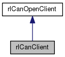
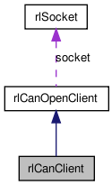

#include <rlcanopenclient.h>
Inheritance diagram for rlCanClient:

Collaboration diagram for rlCanClient:

Public Member Functions | |
| rlCanClient (int _port, char *_remoteadress, int _boardnr) | |
| ~rlCanClient () | |
| int | sdo_read (int _nodeid, int _objectindex, int _subindex, rlCanOpenTypes &_sdo_data) |
| int | sdo_write (int _nodeid, int _objectindex, int _subindex, rlCanOpenTypes &_sdo_data) |
| int | pdo_receive (int _nodeid, int _pdonr, int _mappingnr, rlCanOpenTypes &_pdo_data) |
| int | pdo_receive (int _nodeid, int _pdonr, rlCanOpenTypes &_pdo_data) |
| int | pdo_transmit (int _nodeid, int _pdonr, int _mappingnr, rlCanOpenTypes &_pdo_data) |
| int | pdo_transmit (int _nodeid, int _pdonr, rlCanOpenTypes &_pdo_data) |
| int | sendNMTCommand (int _nodeid, unsigned char _cmd, bool &returnstate) |
| int | restartBoard (int _restarttype, bool &returnstate) |
| int | getNodeState (int _nodeid, rlCanOpenTypes &_data) |
 Public Member Functions inherited from rlCanOpenClient Public Member Functions inherited from rlCanOpenClient | |
| rlCanOpenClient () | |
| initializes the client on localhost port 5000 More... | |
| rlCanOpenClient (int _port, char *_remoteadress) | |
| initializes the client on given port and remove server adress More... | |
| ~rlCanOpenClient () | |
| destructor disconnects client More... | |
| int | connect () |
| opens a new connection to a running rlCanOpenDaemon More... | |
| int | disconnect () |
| disconnects from daemon More... | |
| int | sdo_read (int _boardnr, int _nodeid, int _objectindex, int _subindex, rlCanOpenTypes &_sdo_data) |
| remotely reads a certain object from the object dictionary of a node. More... | |
| int | sdo_write (int _boardnr, int _nodeid, int _objectindex, int _subindex, rlCanOpenTypes &_sdo_data) |
| remotely writes data into a certain object from the object dictionary of a node More... | |
| int | pdo_receive (int _boardnr, int _nodeid, int _pdonr, int _mappingnr, rlCanOpenTypes &_pdo_data) |
| receives single mapped pdo object from daemon. More... | |
| int | pdo_receive (int _boardnr, int _nodeid, int _pdonr, rlCanOpenTypes &_pdo_data) |
| receives an 8 byte pdo from daemon. More... | |
| int | pdo_transmit (int _boardnr, int _nodeid, int _pdonr, int _mappingnr, rlCanOpenTypes &_pdo_data) |
| sends a single mapped pdo object to daemon. More... | |
| int | pdo_transmit (int _boardnr, int _nodeid, int _pdonr, rlCanOpenTypes &_pdo_data) |
| sends an 8 byte pdo to daemon. More... | |
| int | sendNMTCommand (int _boardnr, int _nodeid, unsigned char _cmd, bool &returnstate) |
| sends a NMT command to daemon. More... | |
| int | restartBoard (int _boardnr, int _restarttype, bool &returnstate) |
| forces daemon to restart canopen device. More... | |
| int | getNodeState (int _boardnr, int _nodeid, rlCanOpenTypes &_data) |
| receives node state data of particular node from daemon. More... | |
| void | setPort (int _port) |
| setter for private port variable More... | |
| void | setAdr (char *_adr) |
| setter for private remoteadress variable More... | |
Private Attributes | |
| int | boardnr |
Additional Inherited Members | |
| Public Types inherited from rlCanOpenClient | |
| enum | rl_msg { MSG_SEND = 0, MSG_RECEIVE = 1, MSG_SDO_READ = 0, MSG_SDO_WRITE = 1, MSG_PDO_RECEIVE = 3, MSG_CONNECT = 5, MSG_DISCONNECT = 6, MSG_PDO_TRANSMIT = 4, MSG_NMT_TRANSMIT = 7, MSG_RESTART_BOARD = 8, MSG_GET_NODE_STATE = 9 } |
Detailed Description
Definition at line 158 of file rlcanopenclient.h.
Constructor & Destructor Documentation
◆ rlCanClient()
| rlCanClient::rlCanClient | ( | int | _port, |
| char * | _remoteadress, | ||
| int | _boardnr | ||
| ) |
Definition at line 18 of file rlcanopenclient.cpp.
int connect()
opens a new connection to a running rlCanOpenDaemon
Definition: rlcanopenclient.cpp:132
◆ ~rlCanClient()
| rlCanClient::~rlCanClient | ( | ) |
Definition at line 25 of file rlcanopenclient.cpp.
Member Function Documentation
◆ getNodeState()
| int rlCanClient::getNodeState | ( | int | _nodeid, |
| rlCanOpenTypes & | _data | ||
| ) |
Definition at line 86 of file rlcanopenclient.cpp.
int connect()
opens a new connection to a running rlCanOpenDaemon
Definition: rlcanopenclient.cpp:132
int getNodeState(int _boardnr, int _nodeid, rlCanOpenTypes &_data)
receives node state data of particular node from daemon.
Definition: rlcanopenclient.cpp:418
◆ pdo_receive() [1/2]
| int rlCanClient::pdo_receive | ( | int | _nodeid, |
| int | _pdonr, | ||
| int | _mappingnr, | ||
| rlCanOpenTypes & | _pdo_data | ||
| ) |
Definition at line 44 of file rlcanopenclient.cpp.
int pdo_receive(int _boardnr, int _nodeid, int _pdonr, int _mappingnr, rlCanOpenTypes &_pdo_data)
receives single mapped pdo object from daemon.
Definition: rlcanopenclient.cpp:242
int connect()
opens a new connection to a running rlCanOpenDaemon
Definition: rlcanopenclient.cpp:132
◆ pdo_receive() [2/2]
| int rlCanClient::pdo_receive | ( | int | _nodeid, |
| int | _pdonr, | ||
| rlCanOpenTypes & | _pdo_data | ||
| ) |
Definition at line 51 of file rlcanopenclient.cpp.
int pdo_receive(int _boardnr, int _nodeid, int _pdonr, int _mappingnr, rlCanOpenTypes &_pdo_data)
receives single mapped pdo object from daemon.
Definition: rlcanopenclient.cpp:242
int connect()
opens a new connection to a running rlCanOpenDaemon
Definition: rlcanopenclient.cpp:132
◆ pdo_transmit() [1/2]
| int rlCanClient::pdo_transmit | ( | int | _nodeid, |
| int | _pdonr, | ||
| int | _mappingnr, | ||
| rlCanOpenTypes & | _pdo_data | ||
| ) |
Definition at line 58 of file rlcanopenclient.cpp.
int pdo_receive(int _boardnr, int _nodeid, int _pdonr, int _mappingnr, rlCanOpenTypes &_pdo_data)
receives single mapped pdo object from daemon.
Definition: rlcanopenclient.cpp:242
int connect()
opens a new connection to a running rlCanOpenDaemon
Definition: rlcanopenclient.cpp:132
◆ pdo_transmit() [2/2]
| int rlCanClient::pdo_transmit | ( | int | _nodeid, |
| int | _pdonr, | ||
| rlCanOpenTypes & | _pdo_data | ||
| ) |
Definition at line 65 of file rlcanopenclient.cpp.
int pdo_receive(int _boardnr, int _nodeid, int _pdonr, int _mappingnr, rlCanOpenTypes &_pdo_data)
receives single mapped pdo object from daemon.
Definition: rlcanopenclient.cpp:242
int connect()
opens a new connection to a running rlCanOpenDaemon
Definition: rlcanopenclient.cpp:132
◆ restartBoard()
| int rlCanClient::restartBoard | ( | int | _restarttype, |
| bool & | returnstate | ||
| ) |
Definition at line 79 of file rlcanopenclient.cpp.
int restartBoard(int _boardnr, int _restarttype, bool &returnstate)
forces daemon to restart canopen device.
Definition: rlcanopenclient.cpp:381
int connect()
opens a new connection to a running rlCanOpenDaemon
Definition: rlcanopenclient.cpp:132
◆ sdo_read()
| int rlCanClient::sdo_read | ( | int | _nodeid, |
| int | _objectindex, | ||
| int | _subindex, | ||
| rlCanOpenTypes & | _sdo_data | ||
| ) |
Definition at line 30 of file rlcanopenclient.cpp.
int sdo_read(int _boardnr, int _nodeid, int _objectindex, int _subindex, rlCanOpenTypes &_sdo_data)
remotely reads a certain object from the object dictionary of a node.
Definition: rlcanopenclient.cpp:163
int connect()
opens a new connection to a running rlCanOpenDaemon
Definition: rlcanopenclient.cpp:132
◆ sdo_write()
| int rlCanClient::sdo_write | ( | int | _nodeid, |
| int | _objectindex, | ||
| int | _subindex, | ||
| rlCanOpenTypes & | _sdo_data | ||
| ) |
Definition at line 37 of file rlcanopenclient.cpp.
int sdo_write(int _boardnr, int _nodeid, int _objectindex, int _subindex, rlCanOpenTypes &_sdo_data)
remotely writes data into a certain object from the object dictionary of a node
Definition: rlcanopenclient.cpp:201
int connect()
opens a new connection to a running rlCanOpenDaemon
Definition: rlcanopenclient.cpp:132
◆ sendNMTCommand()
| int rlCanClient::sendNMTCommand | ( | int | _nodeid, |
| unsigned char | _cmd, | ||
| bool & | returnstate | ||
| ) |
Definition at line 72 of file rlcanopenclient.cpp.
int sendNMTCommand(int _boardnr, int _nodeid, unsigned char _cmd, bool &returnstate)
sends a NMT command to daemon.
Definition: rlcanopenclient.cpp:342
int connect()
opens a new connection to a running rlCanOpenDaemon
Definition: rlcanopenclient.cpp:132
Member Data Documentation
◆ boardnr
|
private |
Definition at line 173 of file rlcanopenclient.h.
The documentation for this class was generated from the following files: